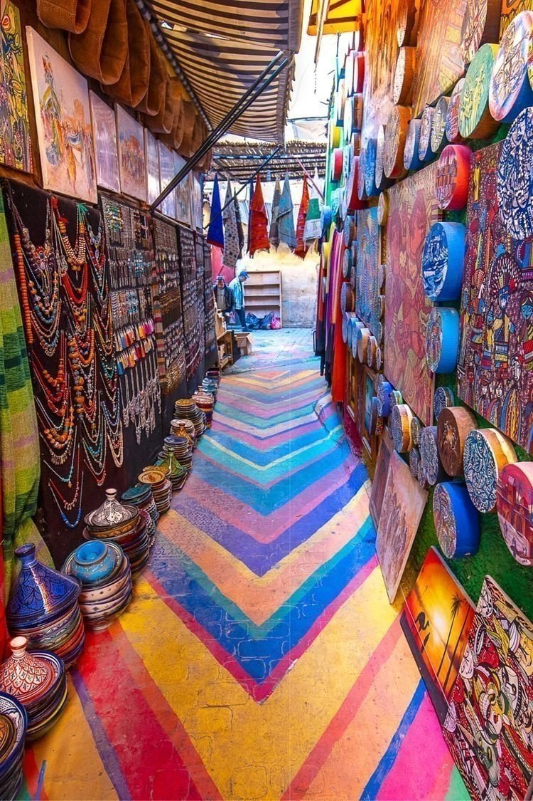

Medina Fes el-Bali
Un immense dedale de ruelles animees, de souks et de fondouks, coeur vivant de la ville ancienne.


Fes est l'une des plus anciennes cites imperiales du Maroc, celebre pour sa medina historique classee au patrimoine mondial de l'UNESCO.
La ville est un centre culturel majeur, connue pour ses medersas, ses tanneries traditionnelles et son artisanat d'exception.
Entre patrimoine religieux, architecture arabo-andalouse et vie de souk, Fes offre une immersion profonde dans l'histoire marocaine.
Un immense dedale de ruelles animees, de souks et de fondouks, coeur vivant de la ville ancienne.

Institution historique fondee au IXe siecle, symbole du rayonnement intellectuel de Fes.

Lieu iconique ou les peaux sont travaillees selon des methodes ancestrales, avec vue depuis les terrasses des ateliers.


Celebre pour ses portes dorees monumentales et son architecture majestueuse au coeur de Fes Jdid.


Specialite festive sucree-salee, a base de volaille, amandes et cannelle.
Plat reconfortant avec msemen emiette, poulet, lentilles et epices.
Vermicelles a la cannelle et amandes, servis avec viande ou poulet.
Patisserie roulee aux amandes tres presente dans la tradition fassie.